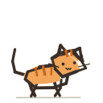
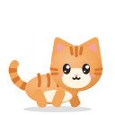

作業中の画面に
猫がいる
Mac の画面の上を 1 匹の猫が歩き回ります。iPhone のウィジェットや Dynamic Island、Apple Watch の文字盤でも、同じ猫が動いて見えます。


公開準備中です。
邪魔をしない 消えない 集めない
作業の邪魔をしない
猫の後ろにある画面は、そのままクリックできます。猫は透明なウィンドウの中だけを歩き、動いていない時の負荷は小さく抑えます。
フルスクリーンでも消えない
全画面のアプリの上にも、複数のディスプレイにも、猫は出ます。Space を切り替えても、そばにいます。
ログインも広告もない
アカウントの登録も、広告も、データを集める仕組みもありません。設定は端末の中にだけ保存され、提供者には送信されません。
同じ猫が3つの画面を歩く
- macOSメニューバーに常駐し、画面の下端を歩きます。猫をつかんで別の場所に置けます。
- iOSホーム画面・ロック画面のウィジェットと、Live Activity・Dynamic Island で猫が動きます。
- watchOS文字盤のコンプリケーションと watch アプリで、同じ猫に会えます。